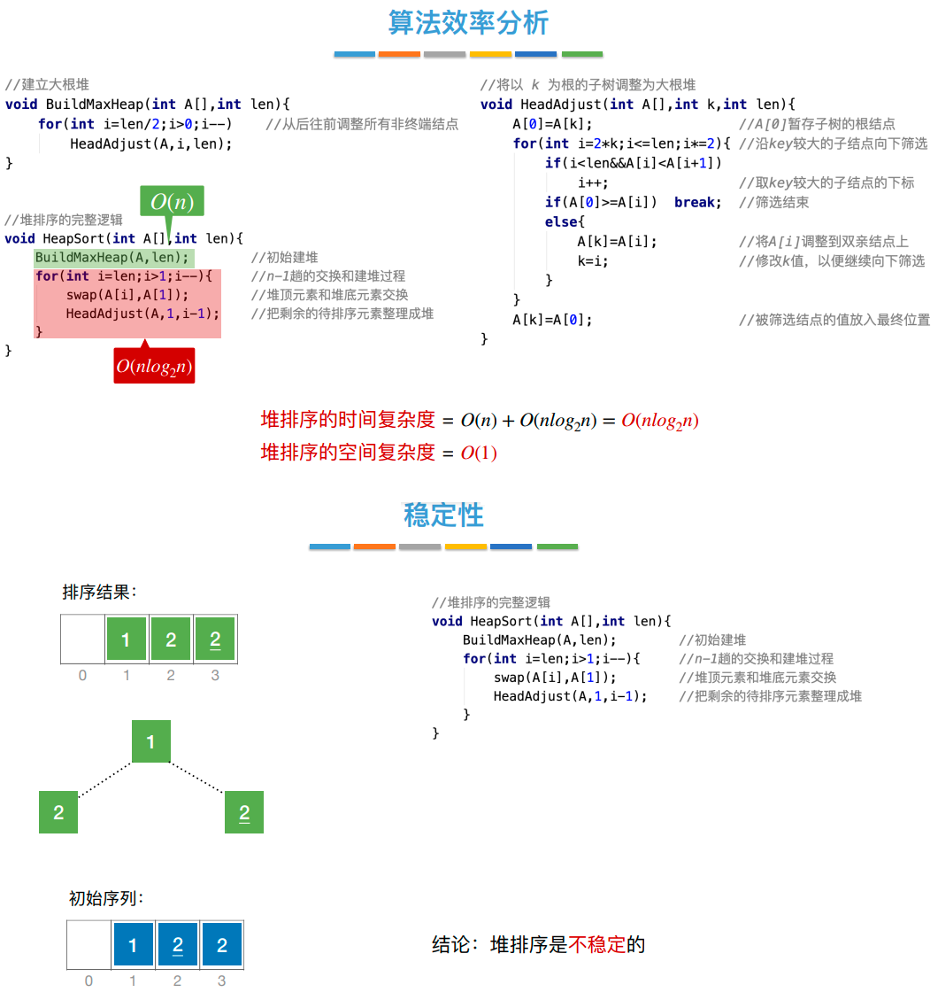

排序排序的基本概念： 评价排序算法的指标: 时间复杂度、空间复杂度、稳定性 。 排序算法的分类: 排序算法基本概念小结:插入排序优化版：折半插入排序 希尔排序 排序算法excel演示.xlsx选择排序之简单选择排序排序算法excel演示.xlsx选择排序之 排序算法excel演示.xlsx 什么是堆? 要知道什么是大根堆和小根堆，先复习一下完全二叉树的顺序存储： 大根堆的逻辑视角【堆排序 根 > 左、右 】: 小根堆的逻辑视角【根 < 左、右 】:现在有两个问题： 我知道了什么是大根堆小根堆，那么 1 如何基于[堆]进行排序呢？ 2 如何将一个组随机的数据构造成大根堆小根堆呢?1 如何基于[堆]进行排序呢？很简单，遍历二叉树，每次找到最小 或 最大的结点即可2 如何将一个组随机的数据构造成大根堆小根堆呢? 堆排序的性能 堆排序知识点总结:冒泡排序: 啥也不说，看舞蹈, 点击此处下载视频快速排序:通过名字就知道这个算法自信心爆棚，这个算法的综合性能的确很不错 看舞蹈, 点击此处下载视频归并排序这里"归并"的英文单词是Merge(合并/归并)，看英文更容易理解。基数排序，啥也不说，看excel演示文件外部排序：外部排序.ppt作业: 1 建立这个序列的大根堆: 53 17 78 09 45 65 87 32 建立这个序列的小根堆: 09 17 65 32 45 78 87 53 在图片中完成，下载图片: 作业1建立大根堆小根堆.png 参考答案: 作业1建立大根堆小根堆答案.png